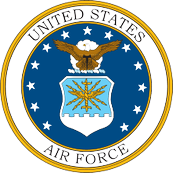
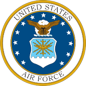
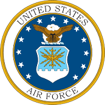

"To protect and promote Scottish and American armed forces customs,traditions,and heritage."


Archie McIntosh was a famed Scots-Indian scout for the US Army during the Indian Wars period of our westward expansion and Post 81 is proud to carry his name on our Post.
McIntosh was described as “tall, slender…a good drinking man and a hell of a talker.” He sometimes had to be propped up on his horse or carried in a wagon after an all-night binge, but the temperate General Crook always forgave him of his behavior, believing McIntosh’s professional judgement was “Razor Sharp.”
The Scottish–American Military Society (SAMS) was founded and chartered in North Carolina, April 12, 1981, as a non-profit organization with the following purpose:


The Society was founded as a veterans organization. The membership is composed primarily of veterans of Scottish ancestry who have served –– or are serving –– in the Armed Forces of the United States and the Commonwealth. If you support the purposes shown above, we would welcome your membership if you qualify. Membership is open to honorably discharged veterans or active duty or reserve military persons who have served or are serving with any branch of the United States or Commonwealth Armed Forces.

Standard SAMS Uniform; Tan aviator or service branch shirt (long or short sleeve), appropriate headgear, Clan, military, or general tartan kilt (No utility kilts), kilt belt, appropriate buckle, sporran, sgian dubh, kilt hose, flashes, and footgear as described above. Hackles are to be worn only by Post Officers and Honor Guard members.
Honor Guard Tan; Tan long sleeve shirt, full size ribbons and badges, black tie, horsehair sporran, Scottish Lion belt buckle, plain black belt, red flashes, black hose, white spats, white gloves and black polished ghillie brogues or low quarter shoes, glengarry cap w/ red & white dicing and red hackle. (NOTE: Horsehair sporran is to be replaced with your regular sporran after Honor Guard Duties are completed.)
Honor Guard Kilt Jacket; Kilt Jacket w/full size ribbons and badges, SAMS Pin on each epaulet, “81” on collar, Scottish Lion belt buckle, plain black belt, horsehair sporran, white spats, white gloves, red flashes, black hose with black ghillie brogues or low quarter shoes, glengarry cap w/ red & white dicing and red hackle.
Prince Charlie Formal; Prince Charlie Coat w/miniature medals and badges. Honor Guard members will wear the Scottish Lion belt buckle, plain black belt, horsehair sporran, black hose, red flashes, with black ghillie brogues or low quarter shoes, glengarry cap w/ red & white dicing and red hackle. White Spats and Gloves may be worn if they are appropriate to the event.
Post 81 Auxiliary Uniform: Auxiliary Members will wear the clan or general kilt of their choosing (No utility type kilts), and a white, aviator style shirt with the Auxiliary Patch on the left shoulder and the Arizona State (Post) Patch on the shoulder. The patches will be placed approx. 1” below the shoulder seams. If the shirt has epaulets, the Arizona tartan epaulet covers may be worn. Veterans may wear such ribbons and qualification badges as were earned and service authorized. Non-veterans will not wear any decorations other than a name badge, if desired, centered over the right shirt pocket. Other than described above, no other pins, badges or accoutrements will be worn on the shirt.